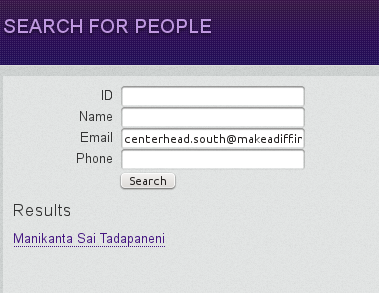

Go to http://makeadiff.in/madapp/index.php/user/search_email
This is a top secret page that no one knows of. Only people with high permissions can access it.
Enter the email ID of the person that has the problem - click Search.
Click on the name of the person - will take you to a seperate page. Click on the edit button at the bottom of the page.
Make sure they have user type 'Volunteer'. Set their passwords to 'pass'. Ask the person to try logging in again. Nine times out of ten, this will work.
This means they haven't been assigned their new ID yet. Ask them for their old email ID - the ID they were using last year.
Search for that email id in the same search page. Edit this person you find, change his email id to the new one, and follow the same insturctions as Situation 1.
If the person is not even found using their old email id, ask for their phone number and search using that. If you find the person, follow the same insturctions again.
If person still not found, we have bigger issues. Esculate the problem to the tech team. They have super powers. They are the only ones who can save you now.